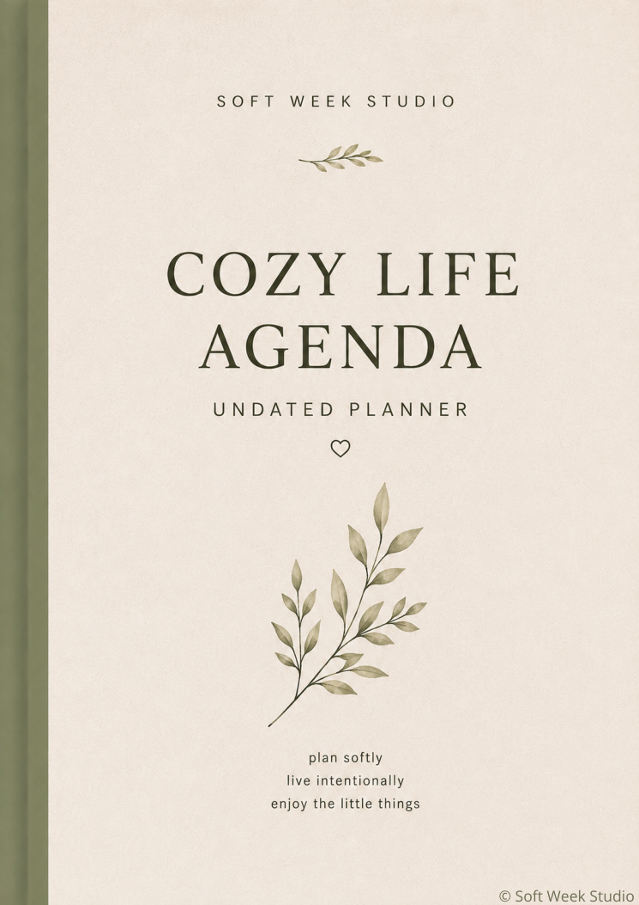
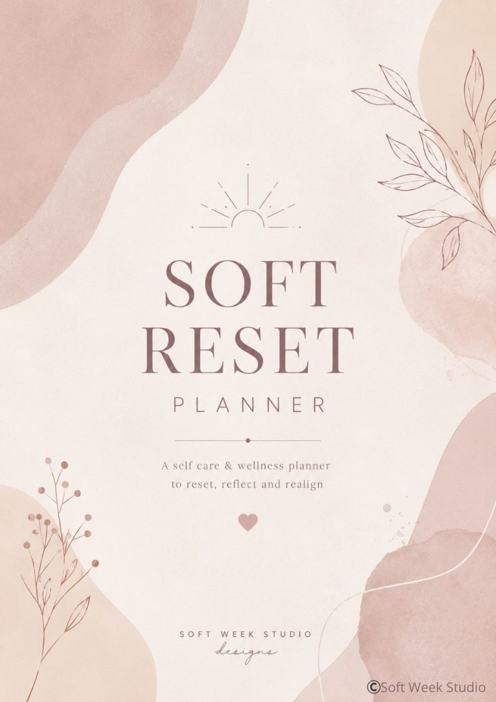
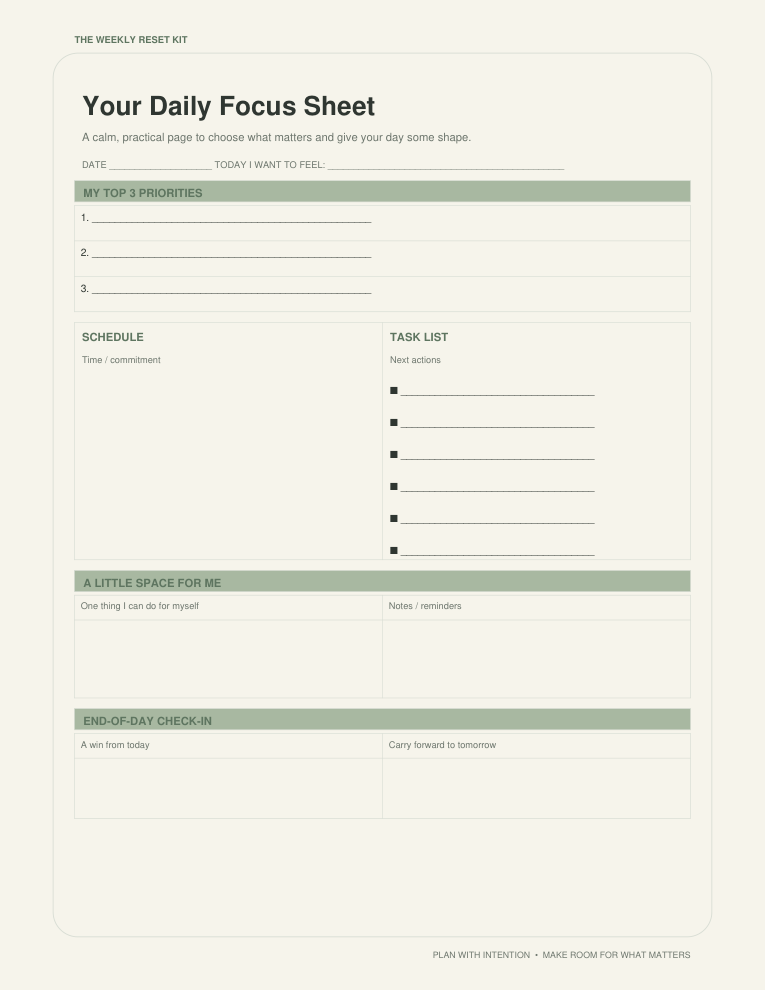

These buttons open or download the PDFs included in this website folder. Before uploading to GitHub Pages, keep index.html, all three PDFs, and all three preview PNG files together in the same repository folder.